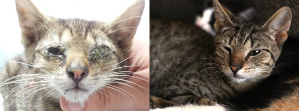
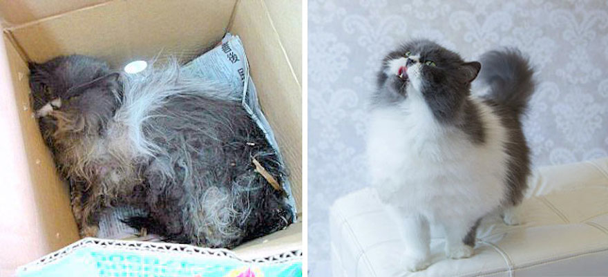

Këtu janë të paraqitur
disa nga macet e fundit që i kemi shpëtuar:

Ky është Ester. Atë e kemi gjetur në rrugë dhe nga
papastërtia e madhe kishte filluar të infektohej në sy. Fotoja e parë është
bërë në janar 2016 ndërsa fotoja e dytë është bërë në Mars 2017. Ai tash
është shumë mirë dhe është gati për tu adoptuar

Kjo është Thamper. Ajo është keqtrajtuar shumë dhe pastaj
është lënë në kuti gati e ngordhuar. Ne e kemi gjetur atë në Shkurt 2017 dhe
sot ajo ndihet shumë mirë por i duhet edhe pak forcë që të mund të bëhet
gati për një famijlje të ngrohtë